Journey to Chinas
- First day in China
- In Taïpei 台北
- Taroko's Gorges太魯閣
- National Palace Museum
- Disgression about my conference
- Of the interest of learning Chinese
- Heading South
- Arriving in 台南
- Anping 安平
- Last hours in Tainan
- Sandimen 三地門
- Liuchiu 琉球
- Jia yi and Zhuang hua 嘉義 還 彰化
- Lugang鹿港
- Towards Hong Kong香港
First day in China
Introduction
Thanks to an IT conference that was taking place in Taipei, I had a chance to travel to Taiwan. When my paper was accepted at the conference, I set up my mind to learn Chinese as fast as I could to enable me to tour the country in a much more interesting manner. In effect, I was aware that outside Taipei, English was an entirely foreign language and that knowing some Chinese could enhance my trip there. Following the 二個中國 policy, I learn the traditional characters used in Taiwan together with the spelling system from the mainland. So, neither the mainlanders nor the islanders can completely understand me.

Flight Toronto-Taïpei
The Far East being indeed far, the trip from Toronto to Taipei lasted 15 hours. Though, a few rewarding sceneries made the journey a bit less monotonous. For instance, when flying over Greenland with a sky free of clouds above the floes and ice mountains. Another fantastic view was just before landing in Hong Kong. A few old junk boats amid the modern container ships were lazily navigating over the greenish ocean. Hither and thither were scattered a few islands covered with trees. The whole pictures had a déjà-vu flavour. Was this impression a mere product of my imagination or did it echo some sceneries seen in Cantonese movies?
Arrival in Taïpei
Many Westerners among the passengers in the plane to Taipei. From their witty looks, I could guess that many of them were other researchers attending the same conference. As soon as I reached the terminal, I was struck by the Chinese atmosphere overwhelmingly present there. Aiming to apply my limited Chinese skills I headed for the bus terminal rather than taking a taxi. Not without difficulties, I managed to find my way through the adequate bus stop. I mockingly noticed that a few other white guys, who at first entered the bus terminal to find a cheaper transportation mode, retreated to the taxi terminal when they realized that the bus terminal was not English friendly.In the bus heading to my hotel, I am gazing at the city. In this entirely new environment, two different things are surprising. The first one is a hotel on the top of which is painted a gigantic swastika. Even if am well aware of the significance of this Buddhist symbol, it makes me feel exceedingly uneasy. The reverted direction does not hide the hideous connotation this symbol as taken in my old Europe and echoes its darkest age, an indelible stain on the occidental civilization. I then spotted some Betel nuts girls 檳榔西施 whose rare clothes merely hide their curves, which happened to be very pleasant. Seeing some half-naked girls standing on the boulevards was indeed surprising.

 After a 24-hour-long journey I finally reach my goal: the Grand Hotel 圓山大飯店, my accommodation during the conference. A luxury haven for Japanese
businessmen and (rich) American tourists. A couple of light years away from my daily life. The various concierges and receptionist seem to
speak correct English but it is a mere façade. There is a hierarchy among the employees depending on their English (or Japanese)
proficiency: receptionists, concierges, room staff and finally all the hidden ones working in the kitchen or in the laundry. All of them
are exquisitely polite. The hotel, as evidenced by its peculiar architecture and the numerous artifacts displayed here and there, aims to
stand as a symbol of the traditional Chinese culture.
After a 24-hour-long journey I finally reach my goal: the Grand Hotel 圓山大飯店, my accommodation during the conference. A luxury haven for Japanese
businessmen and (rich) American tourists. A couple of light years away from my daily life. The various concierges and receptionist seem to
speak correct English but it is a mere façade. There is a hierarchy among the employees depending on their English (or Japanese)
proficiency: receptionists, concierges, room staff and finally all the hidden ones working in the kitchen or in the laundry. All of them
are exquisitely polite. The hotel, as evidenced by its peculiar architecture and the numerous artifacts displayed here and there, aims to
stand as a symbol of the traditional Chinese culture.
Heading for dinner, I wander in the narrow streets of Taipei, which is far from being safe due to the flocks of scooters which don't hesitate to use the sidewalks as shortcuts. Out of thin air, I spotted a shop whose sign reads "Carcassonne", this medieval city in the South of France which, among other virtues, happens to be my hometown. I am puzzled but the shop is closed, so I shall go back there another day.
In Taïpei 台北
Taroko's Gorges太魯閣
At dawn, I leave the hotel towards Taroko, one of Asia's seven wonders, a stunning natural park located close to Hua Lian. Besides a brunch of fellow researchers, an aged Taiwanese gentleman, a distinguished retired medicine professor, and his wife are part of the tour. As they happen to speak French and are eager to practice, we speak together, mostly about politics. As he seems to be over sixty, he probably arrived in Taiwan with the nationalist army during his childhood. He explains to me how low he thinks of the mainlanders, the communists as he labeled them. His main point is that they lost their traditional values, e.g. honesty, and have become a nation of thieves. The sceneries are gorgeous, mid-way between the mountains and the ocean. The gorges in themselves, whose cliffs are surprisingly straight, are rich with colours due to their marble component. The cliffs are a bit moistened by the rain of the unstable weather, thus emphasizing their shimmering. The guide points at various rocks whose shapes are supposed to evoke various figures such as a bear or an Indian chef with his leather ornament. There are also a few water falls which pale besides the Niagara ones which I am leaving by. Here is a link for the pictures taken by one of my fellow travellers, Merhdad, an Iranian PhD from Scotland.
The guide then takes us to a pub operated by an aboriginal family for a break. A place famous for its rose-blueberry tea, which Japanese tourist are craving for (a gage of its quality). The drink is indeed amazing, the best tea I ever had. I am (positively) surprised by the looks of the waitress, by their wide eyes and fair complexion. Their looks are also fierce. I ask the guide who confirms my intuition. They are from a local aboriginal tribe. Nowadays, these aboriginals, the first inhabitants of the islands before mainlanders settled in the XVIth century, only make up a few percents of the total population. For those keen with linguistics, below a very interesting article about their languages. The guide tells me that aboriginal girls are famous for their beauty, an assertion I easily agree on.
At the end of the end, we are gently led to a tourist trap: a boring marble factory with a neighboring exhibition hall. The shop is selling jade jewels and marble sculptures. After more than one hour in the shop we are finally freed and head towards the train station. I suspect that the guide gets a commission on the sales and that she does not let her group go before they have spent a certain amount of money. Return to Taipei after an entire day spent in the gorges.
National Palace Museum
On today's menu: the national palace museum. This museum, second to none but to Le Louvre or the Metropolitan, is built on the private collections of the late Qing emperors. Originally from the Forbidden City, they were brought to Taiwan by the Nationalists (see this link to learn about their tumultuous whereabouts). One can browse a selection from the museum collection here . Some items I particulary liked:

 Miniature boat carved in an olive pit
Miniature boat carved in an olive pit
Buddhist craft


 The "cabbage" jade
The "cabbage" jade
Circular jade 璧 from the ancient Xia dynasty
Traditional painting
Another piece I was really impressed by is a calligraphy work where the character shou 壽 (longevity) is drawn with 128 different styles. Most artifacts date from the Ming or Qing dynasties. But there are also a number of more ancient pieces (notably some ? bi jade from the Xia dynasty). It is also fascinating to see the evolution of the Chinese script, ranging between the rough symbols carved on sacrificial bones and the elaborate calligraphy of the Qing era.
An entire day is merely enough to scrutinize all the pieces displayed. It seemed that many of the visitors were Chinese tourists from the mainland who were eager to see all these treasures taken from the continent sixty years ago. As a result, the museum was incredibly noisy, a clamour rather unusual for such a place. Some helpless employees were vainly standing here and there with signs "Please keep silent". Also of interest is to compare the attitudes of the Westerners and the Chinese. Most of the former (only a handful at the opening, much more numerous towards the end of the day) only glanced at the galleries without much respect for the beautiful objects. Before going back to my hotel, I stopped by the shop, whose sign reads "Carcassonne 卡卡頌 ", I have noticed the day before. The vendor is taken aback to see a native from this very town (since the city's population is no more than 40,000 inhabitants, the probability of finding a Carcassonnese in Taipei is approximately zero) and we exchange a few words, joyfully mixing Chinese and English, about this delightful place (en.wikipedia.org/wiki/Carcassonne). Through him, I can appreciate the hospitality of the Taiwanese people as he heartily offers me to guide me through Taipei if needed.
Disgression about my conference
The conference organisation is impressive. As if the Taiwanese wanted to have a "big face". One aboriginal dancer perfoms for the opening ceremony. During the ensuing welcoming speech, the president of Taiwan National University quotes my favourite saying of Confucius*Is it not pleasant to have friends coming from distant quarters?
Afer his speeches, various prizes and awards are distributed. Nearly all middle-aged recipients are Westerners. Among the consecrated young researchers Asian faces are de rigueur. Not very surprising. The breakfast they offer every morning is also noteworthy. Scores of delicious dim su 點心 (steamed dumplings) and various other Chinese delicacies. One day, I chat with a couple of Americans from the Midwest. They were eating nothing but bacons and scrambled eggs. Barbarians.
As my conference is about electrical engineering, a majority of the scholars are Chinese, usually from the mainland. For nearly all of them, it is the first time in Taiwan, given the tremendous difficulty to be issued a visa. When I speak with them, we swiftly shift to political subjects, about the Taiwanese independence and the Chinese civil war. As they are all very educated and bright people, their opinions are of acute interest. The only things they agree on are: Taiwan is a beautiful place, traditional characters are much more beautiful than the simplified ones, and no museum in the mainland can compete with the National Palace in Taipei. One of the persons I met, a computer science professor in one of the top Chinese universities has a surprisingly high opinion of Taiwan and her achievements. He praised Chiang Kai-shek for succeeding in building up a modern society while keeping alive antique Chinese customs. According to him, the communists had a very disastrous influence on the Chinese civilization (especially during the Cultural Revolution) whereas they (until recently) lacked of a consistent economic agenda. Another of my acquaintances, a middle-aged woman who settled in Canada has an opposite point of view. A point she mentioned is that the Chiang Kai-shek memorial in Taipei is nothing but vile propaganda. According to her, the vast majority of Taiwanese people despised him. More, after severing its relationships with the mainland, the rebellious island was more or less left isolated from the Chinese culture and could only maintain a superficial surface of Chinese traditions.
An interesting anecdote illustrates the possible cultural difference between mainlanders and Taiwanese. An evening, at my hotel (a four star one), I came across a delegation of Buddhist monks, presumably high-officials. As Buddhists are supposed to be free of material desires, it is rather surprising to see some shaved heads in the most luxurious hotel in Taipei. Moreover, some of the younger monks were carrying shopping bags as if they had spent the afternoon in Taipei malls. Their presence is not only incongruous but also shocking. A Singhalese (i.e., Buddhist) colleague of mine shared my thoughts and wondered why they were not staying overnight in a random temple downtown. When I asked the hotel's receptionists (who did not even know the word Buddhist in English), they told me that they were dignitaries from the mainland in Taiwan for the approaching Buddha's birthday. The moral of this story is that somehow mainlanders lost part of their moral values. There, even Buddhist high-officials don't respect basic moral precepts.
Of the interest of learning Chinese
Two receptionists in my hotel are particulary friendly. Partly because of my odd requests (where can I buy a mah-jong set or how can I print name cards with my Chinese name). Partly because they are impressed by my Chinese skills (in effect, I am the only Westerner in the conference able to utter a few words in Chinese). At some point, I ask them where is the best place in town to have a "hot pot" 火鍋. After giving me the address of their favourite restaurant, they soon offer me to accompany with them there. I therefore skip my conference during one afternoon to go out with them. The hotpot is a dish of Mongolian ancestry. In a pot filled with hot water, the customer boils some vegetables and some thinly sliced meat. This brief description is not enough to render the taste of this dish. As I am about to pay, the cashier, a man in his sixties, tells me something in Chinese I don't catch. My laughing friends translate "He said that you are very beautiful". This is on aspect of the Chinese culture, namely complimenting strangers (even of the same gender) on their looks that is rather surprising. Before saying good-bye, the two girls offer me a name chop for the Chinese name I had chosen 法 寶玉. This is a seal, written with the person's name written in a very particular script (a very ancient one), which they use to sign important official documents. Before returning to my hotel, I buy a fresh and huge durian, a fruit I discovered in Canada but that I could only find frozen there.For those of you who don't know about durian, it is a very very strange fruit. Unique. Its tastes like sweet garlic. Those who can't stand the durian, and there are many such people, sometimes argue to know what is the worse with this fruit: its taste or its smell. Nevertheless, I bring back my durian to the hotel, giving a good laugh to all the receptionists and have it in my room. I am due to leave the following day, so I can leave before the hotel staff figures out where this horrible smell is coming from.
The following evening, I visit the Tchang Kai Chek memorial, a rather martial building. An ajdacent musuem describes the life and the feats of the KMT General. We can learn that he was a brave shield for the people of China against the cruel communists, sustained by the SSSR, who mistreated the innocent Chinese farmers and whished to wipe out thousand of years of history. Nothing but propaganda. Interesting though.

Heading South
Arriving in Tainan 台南
Taipei being undoubtedly the most westernized Taiwanese city, I decided to head south. There, English is an entirely foreign language, westerners are much rarer and the traditional Chinese culture is more present. Noblesse oblige, my first stage is Tainan, the former southern capital, which hosts many historical buildings, only a couple of hours away from Taipei via the high speed train. Tainan's climate is a subtropical one. When I arrived there (beginning of May), the temperatures were already barely bearable. Coming from the cooler Taipei, I did not have any sunscreen lotion, a must-be accessory for any visit to Tainan. I therefore had to drop by a drugstore. A little problem arises; I was unsure about the English word for suntan lotion and had absolutely no idea about the Chinese one. The pharmacist fortunately understood when I asked for some"藥 給 皮膚反日". As an aside, she told me that her son was a prodigious violinist, due to perform all across Europe next summer.At my hotel, there are two receptionists, the first one knew 30 English words, the second one 5. Promising. As I am not carrying a watch, I briefly turn the TV on to check out the time. The TV schedule is also revealing: half a dozen channels are concerned with the latest cosmetics and the most efficient diets, another ten are Buddhist-oriented and aim to provide the shortest path to Nirvana.
As I am heading towards the first temple I am planning to visit, an aged lady (over 70) approaches me, her large smile showing her only tooth "Good evening !". I politely greet her back and resume my way. One minute later, she comes back to me "Good afternoon !". I see, as it is 4pm, she is thinking that her first salutation was not proper. Having used all the English words she knew, she suggests me to have some food. No thanks. The first temple I reach seems a bit crowed. I therefore ask, in Chinese, a man standing by with his son whether I may enter. His answer is positive. Eager to educate a Western barbarian, he sets up his mind to give me an impromptu lecture on Taoist spirituality, in Chinese as I first approached him in Mandarin. Having studied Chinese for only three months, I barely understand his explanations. Nevertheless, I manage to catch that this temple hosts a particular symbol that is rather rare (only 4 in Taiwan). Deceived by my lack of response, he tries to shift to English. Unfortunately, he only knows one word "Good ". After a few more minutes, he politely takes his leave, his face full of satisfaction. As ignorant as I was earlier on about Tao, I go on with my touristic activities.
Back to the hotel. This evening's goal is to find a laundromat. I ask the hotel clerk (the one who know 5 words of English) where I can find one. After a difficult but finally sucessful discussion, I manage to understand that there are plenty of them close to the univeristy. There I go. Chinese drills again with the laundromat owner. I finally understand that I need to come back in two hours. The surroundings are vivid thanks to the students population. Plenty of restaurants, pubs...
Anping 安平
A taxi first takes me to Anping neighborhood, some fifteen minutes away from the city centre. There stands a Dutch fort dating from the XVIth but whose architecture has been remodeled and a fortified barrack build by the French a bit later. The former hosts an interesting exposition about the local life under the Dutch rule. In particular it gives some details about the highly lucrative (400% margin) trade of pepper and other spices. The de rigueur Chinese guide eager to practice his English entertains me a few minutes, albeit I cannot understand his words. The premier materials for the castle walls were oyster shells and glutinous rice. As I was visiting the nearby factory where these special bricks were molded, three local youngsters asked me whether I would mind them taking a picture of me. One of them, an English teacher posing as a model, explains to me that her friends own a camera shop and aim to try their products. After a few shoots, they kindly drive me to a local restaurant for fried shrimps. After lunch, I move to another temple. As I am standing outside to appreciate its decorations, a middle-aged lady gets in my vicinity and says, in Chinese, that she would be grateful if I could speak some English with her teenager daughter. I exchange a few words with the young girl, rather embarrassed by her mother lack of tact.

After a glance at the West gate, I head towards Confucius temple. A concert is taking place there when I arrive. In the audience stands a typical American English teacher, communicating in English with his Chinese girlfriend, too casually dressed, not quite interested in the performance. The musicians, amateur ones, are playing a variety of traditional Chinese instruments, offering a rather interesting range of sonorities. Though, I notice that their instruments are tuned with the Western scale Do-Re-Mi... Driven by my curiosity, I sneaked behind their backs to investigate which notations they use on their notes: they use the numbers 1,2,3,... to denote Do, Re, Mi. A sub- or superscript dash indicates the octave with the usual symbols #,b for sharp and flat. I am not sure I understood how they indicated the rhythmic. Below an example
Do Sol (-1 octave)Mi (+2oct) | Ré (blanche) Fa | Sol La Si Si (4 croches) Ré
Nothing but numbers.

A temple devoted to GuoXingYe 國姓爺, the Ming dynasty general who conquered the island in the XVIth and expelled the Dutch, is located nearby. This brilliant strategist, who was hoping to overthrow the Mandchous and restore the Ming emperors (hence, its retreat on the island) was born to a Japanese mother and a Chinese father. Interestingly, he was known for being rather short. On the other hand, on the paintings showing the rendition of the Dutch, he is represented much taller than them.
Last hours in Tainan
On my first evening in Tainan, a very pleasant city notwithstanding the tropical weather, I stop in some pub for a drink. A group of laughing high school students offers me to seat at their table. There are 6 of them and they know 3 English words together but are willing to practice. One of them calls a friend to translate his questions and consciously repeats:- Where are you from?
- How old are you?
- Are you married?
- ADo you have a girl friend?
- What do you think about Taiwanese girls?
Sandimen 三地門
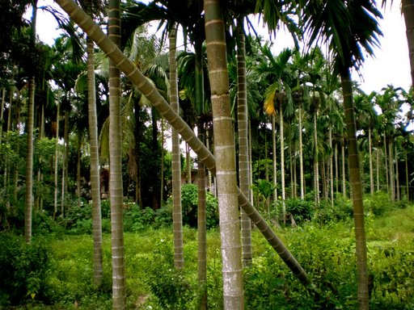 Today's stage is Sandimen township, a peaceful hamlet surrounded with beautiful mountains, mostly inhabited by aboriginals. It hosts a so-called aboriginal park devoted to the customs of Taiwan original tribes. In spite of being too tourists oriented, this attraction is interesting since it describes rather well their dances, beliefs etc. After visiting the park, I walk towards the village in itself, across a river. Plenty of trees around, either mango or betel nuts ones. The village looks dirty, with a smattering of errant dogs. I stopped in a pub. The waitress, an aboriginal girl (of a different tribe than the Taroko girls, much less beautiful) seems very pleased with having a Westerner as her customer. Having uttered the usual "You are very handsome", she asks the usual questions: country ? married ? girlfriend ? As I am taking my leave, she gives me her phone number: "In case you come back, if God decides so". Hem hem.
Liuchiu 琉球
After Sandimen, I travel to a small island on the East Coast, Liu Qiu. As I am the only Westerner on the ferry to the island, the captain treats me as a very precious guest. He leads me to the best seat on board and makes sure that I alight first. It is rather embarrassing to have priority over some old gentlemen and ladies. His English is far worse than my Chinese. Moreover, nearly all his sentences are punctuated with a final "ah" (as he would do in Chinese). Nevertheless, he is friendly and helpful. When I set foot on the island, he introduces me to an old Chinese lady, saying that she will help me to find a hotel and to rent a bike. She does not know a single English word but we settle a good bargain. I asks her whether I need a lock or not. She replies épond: 不要不要 " No need ! No need ! ". A few years ago, I attended a conference about China. The lecturer was saying that 50 years ago, there weren't many thieves there and that nobody would steal an unattached bike. A golden age lost. It seems there that Taiwan is lagging some decades behind the mainland for this particular aspect.

Jia yi and Zhuang hua 嘉義 還 彰化
Back from the island, I go back to PingTung. For the first and the last time of my trip, my shortcomings in Chinese proved to have some negative consequences. In the bus station, I ask for a ticket towards Kaoshiung 高雄 . Alas, the cashier understands Kaoshu 高樹 and, after having giving me my ticket, urges me to take a bus that is about to leave. As I am running out of time, I don't check my ticket and get on the bus. One hour later, at the bus terminal I finally figure out my mistake and I have to take another bus to return to my starting point. Kaoshu is much more rural that the other cities where I have been, as evidenced by the tremendous numbers of betel nut stains on the ground. The bus station is hunted by one taxi driver looking like an ex-convict and spitting betel nuts. On my way back to Taipei, I first stop in Jia yi to visit Wufeng temple ?吳鳳廟
Next, I take a train towards Zhuang hua. Its Confucius temple is not bad. There is also a twenty-three-meter high statue of Buddha on the top of a small hill. As I get there at dawn, I can apprecaite the surroundings. Something a bit odd. On the two flanks of the statue, only 5 meters far from it, stand two soda fountains. In the middle of a temple...
Lugang鹿港
Lugang (deers' harbor) is an historical town that was of economic and cultural significance one hundred years ago. As a legacy of this golden era, the city has many historical buildings and temples. The city heart is a labyrinth of colourful alleys. The city is also known for his Buddhist craft and tens of shops sell such artifacts. The most famous local dish is the beef tongue, a pastry of suggestive appearance. One of the most popular tourist attraction is the gentlemen lane. In case a man was coming across a woman, he was supposed to temporally metamorphose into a contortionist to make sure that he doesn't touch her.
 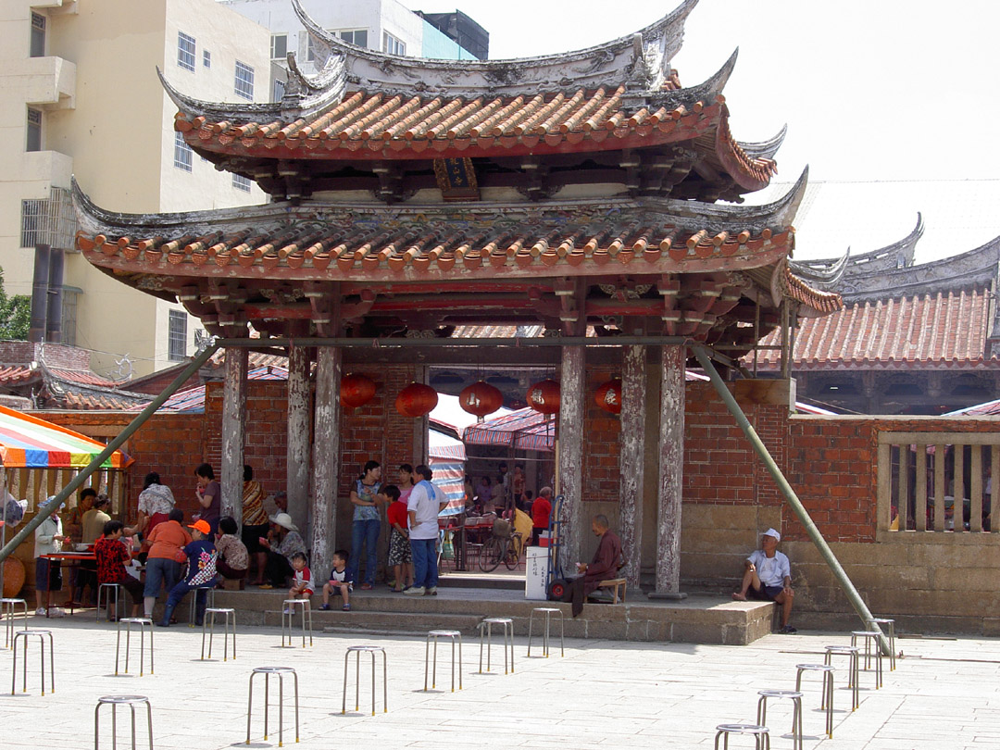
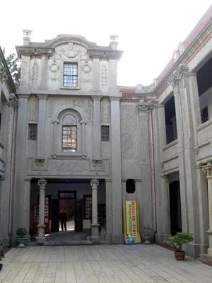
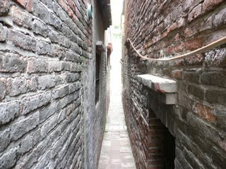
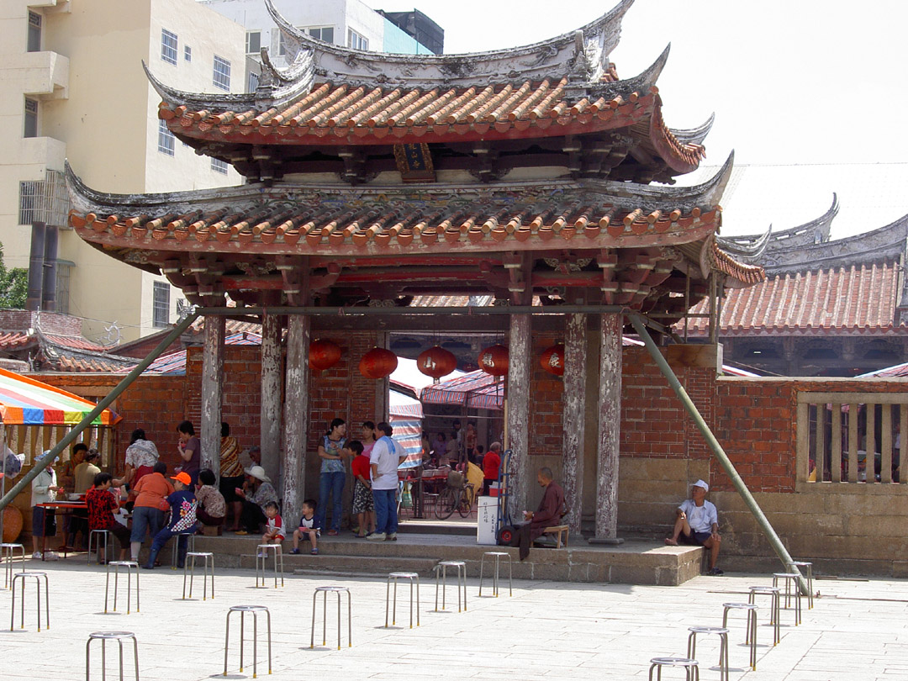
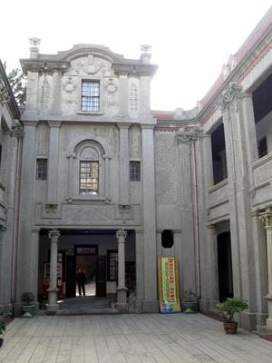
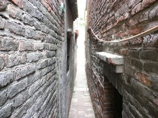

Towards Hong Kong香港
Back in Taipei
In the early morning, I visit Sun Ya Tsen memorial, the father of the first Chinese republic, revered on the two sides of the strait. It is the perfect time to observe many inhabitants practicing shadow boxing, yoda or Latin dances in the park just before going to work. Afterwards, I go to the National History Museum. I ask for a ticket. When it comes to pay, I cannot find my wallet in my back bag. A bit embarrassed, I explain to the cashier that I can't pay the ticket and that I need to go back to my hotel to get my wallet back. As am I speaking Chinese and looking nice, she let me in "Free ! Free !". After some time, I finally find my wallet and go back to pay. In any case, this shows how nice Taiwanese might be. This museum's collections aren't as rich and impressive than the National Palace ones. Nevertheless, they have a good number of ancient jades ( cf. wikipedia for their historical significance). They also have many three-colour sculptures 淡水 from the Tang dynasty. Interestingly, most of the representations of women from this era show some females rather fatty and curvy. This is why many large-waisted Chinese girls sometimes sigh "I wish I had lived during the Tang dynasty". Some pictures
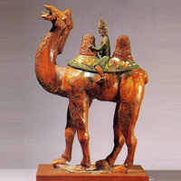
 Camel (it has two but I don't know the appropriate word in English)
Camel (it has two but I don't know the appropriate word in English)
Curved women's paradise
On the top floor, there was a temporary exhibition of French marbles from the XVIIIth century. The statues are pretty familiar.
Danshui 三彩
For my last evening in Taiwan, I go for a walk in Danshui, a peaceful and scenic port, some twenty kilometers east of Taipei. Per recommendation of my friends, I try the local seafood which is quite tasty and fresh (yellow eel and fried octopus). The city is also the home of a few buildings built by the British or the Spanish. I stay there for the sunset, a splendid point of view on the sea.
 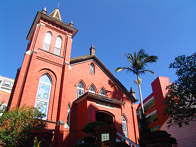
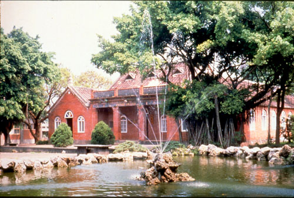
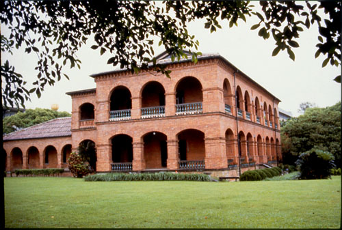
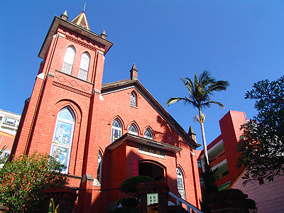
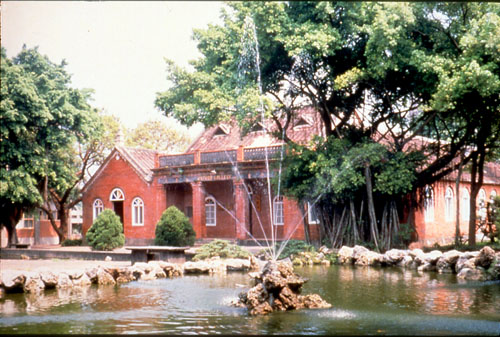
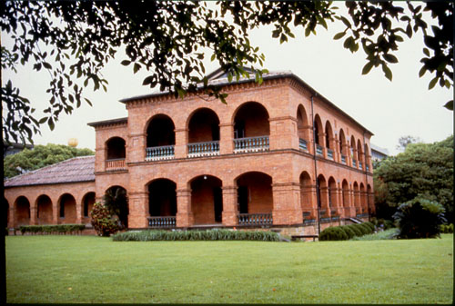
Arrival in Hong Kong
On my way back to Canada, I had decided to stopover in Hong Gong(xian3 gang3 in Mandarin). From the rebellious island to the prodigal one. The passengers boarding the plane between Taipei and Hong Kong are roughly equally distributed between Cantonese and Mandarin speakers. To ease the communication, and regardless of the absurdity of such a situation, the stewardesses use English as a lingua franca. I set foot in Hong Kong a few days after the beginning of the H1N1 flu, seen as a very serious threat by the local authorities: all the airport employees wear protection masks, thermographic video cameras are ubiquitous, every single incoming traveler must fill a health information form (to declare any suspicious symptom etc). Driven by a (almost morbid) curiosity, I write that I have some fever. As soon as I hand out this form to an immigration officer, his face suddenly changes. Within 30 seconds, I am firmly encouraged to wear a protection mask. Next, accompanied by a policeman, I am lead to a physician for a brief medical check-up. This physician, whose English is rather impressive, lectures me on the flu and urges me to contact hospital emergencies if my symptoms should persist (I was aware that no case had been found in Taiwan at that time, being quarantined was highly unlikely). Due to this interesting tour of the airport, I lost 15 minutes. My friend who was collecting me at the airport therefore had to wait a bit more.
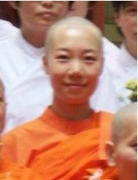 This friend named 晶淼 (note the pattern of the two characters, three suns, three waters) is an acquaintance from Canada. We took a course together a couple of years earlier and her husband was connected to my research group. Among other virtues, she is a devout Buddhist, as evidenced by her picture, of Mongol and Manchu heritage (not a single drop of Han blood). She is always eager to speak about theology, a rare attitude among mainlanders, and is rather knowledgeable in this field.
Prior to my journey to Taiwan, I had been exceedingly busy and I could not spare time to book a hotel in Hong Kong (actually, my friend suggested my being accommodated in a Buddhist temple, but did not dare to disturb her masters). She explains to me that the timing of my arrival could not be worse since it is in the middle of the longest Chinese bank holiday (no more than two days off, for Buddha's birthday and the International Workers' Day). In other words, there isn't much hope to find a hotel vacancy. Fortunately, I met a fellow researcher during my conference who is studying in Hong Kong. Through her, I manage to a cheap place to stay. Interestingly, in this hotel, the free surface of my room is no bigger than one square meter, asides from the bed and the bathroom. A perfect rabbit hutch. Free space matters in Hong Kong. Every single squared inch must be used. Some examples: the airport is built on an artificial island, all buses are two-storey, ... Having left my baggage in the hotel, we go for lunch to a nearby vegetarian restaurant. Since she is the specialist for meatless viands, she orders for me, some lotus flowers. At some point, I notice a piece of hair in my dish. I discreetly put it aside. Unfortunately, another appears a few seconds later. And so forth and so forth. At this point, my friend quotes a Chinese proverb about lotus flowers. Once separated one from the other, they are still connected by some narrow filaments as if they did not want to leave each other. Those weren't hair. On our agenda, Hong Kong museum of history which narrates the various eras of the island's populations. The museum is quite interesting and the collections are vividly exposed. However, I skip the last part "After 1997" that deals its handover, labeled as "The most important event in Hong Kong history". It has a propaganda flavor, surprisingly similar to the Chiang Kai-shek memorial's one. Having spent the entire afternoon in the museum, I just have time for a stroll in the city centre (Kowloon) to enjoy the skyscrapers scenery.
Buddhist festival
On the following day (May 2nd) is celebrated Buddha's birth, a must-attend celebration for my friend. She takes me to a park where we join a friend of hers (whose haircut is exactly similar). Besides an impressive stage where the ceremony is to take place, there are many stalls selling books and various kinds of food. The attendance consists of 200-300 people, most of them middle-aged women, just a few youngsters and/or males. A gong announces the beginning of the festivities. A cadets' fanfare, whose military tune seems out of place, walks in front of the procession. Next come some 20 women, half of them wearing a traditional Manchu dress (my friend is still wondering why they chose such an incongruous costume), the other half the familiar Chinese dress qipiao. Having kneeled in front of a statue of Siddhartha standing on the stage, they leave their offerings, fruits and flowers, respectively. Next are coming a dozen of gentries, either politicians or business men, including a ... Sikh priest (to show how Buddhist are open-minded). Last but not least is advancing a (Mandarin speaking) Taiwanese monk that will conduct the ceremony. My friend, an expert in Buddhist matters, explains to me that he belongs to a particular school of though that put some emphasis on social activities to spread their teaching. After some welcoming speeches by the officials, the Buddhist monks delivers a sermons (as he is speaking Mandarin, its speech is displayed on a screen) about Buddha's life and teachings. The audience stands up from times to times and I do my best to move accordingly. They also occasionally sing mantras. The ceremony does not last more than 40 minutes. Afterwards the monks and the officials move to another statue of Buddha (represented as a boy) to give him the ritual bath.
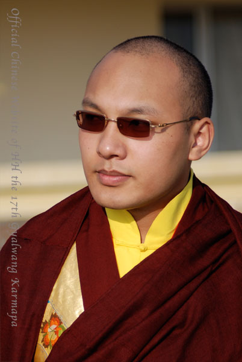 As we are wandering through the various stalls, my friends point at a picture of the 17th Karmapa (one of the most important Buddhist lamas) and praise his beauty. His looks are seemingly very popular among female followers (cf. picture). He has fled to India some years ago. My friend, an ethnic minority citizen, revering Buddhist officials crushed by the central government, living in the democratic enclave of Hong Kong could have many reasons to criticize the government policies. Nevertheless, she strictly adheres to their views about Taiwan for instance. Hard to understand. There is one calligraphy workshop in the park. Any passer-by is welcome to do his best in copying some Buddhist proverb with a Chinese brush. I have a try with my nuns. Within seconds, three or four Chinese discreetly peep behind my back to see how well the white guy is doing (I have only seen another Westerner during this ceremony, cf. below). They even congratulate me on my calligraphy, out of politeness? The outcome is not outstanding. At least, I haven't made many mistakes for the stroke order. As I am waiting for my friends who haven't completed their copying an Englishless Chinese lady, thinking that I am lost, escorts me a few meters away towards the only other Westerner. A Buddhist convert from New-Zealand, who turns a monk in Hong Kong. He asks me whether I am looking for Buddha's path. I am not. Nevertheless, he is a nice guy, also an acquaintance of my friends. They explain to me that most Chinese cannot compete with his Chinese literacy and that his knowledge of Buddhist texts is outstanding.
Another giant Buddha
The ceremony being over, we go back to my hotel. Something is stunningly different from the previous day. This day, a Saturday, flocks of Indonesian and Filipinas maids and nannies have their weekly day off. As they don't have any place to go and not enough money for shopping, they just stay in the streets and in the public parks, chatting with their friends. They were invisible the previous day and suddenly came out of thin air. I ask my friend whether their living conditions are good. She explains to me that their employers must give them one day off a week and that they are usually well-paid. A small demonstration is taking place a few blocks away. My friend translates the banners for me "The Communist party will disappear". My friend had explained me earlier that Hong Kong has a peaceful country side free of urbanization, where she often goes for meditation. Following her advices, I head towards the Lantau island which hosts a giant Buddha statue